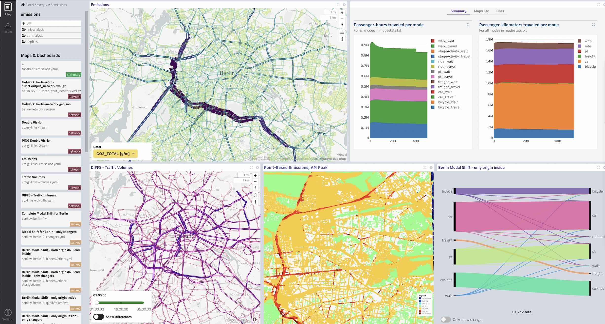

The project has outgrown the old github.io URLs and needed a place of its own. Nothing else has changed about the project or website: it is still a 100% open source, static website developed in the open on GitHub. All of the source code remains on GitHub too. Only the URLs for actually using the tool and its documentation have changed.
SimWrapper release 3.6 is online now. This entry also includes new features from 3.5 which didn't get its own post.
Some bugfixes and a few new features:
Maps:
Layered maps: Area/network maps can now have shapefile layers above or below the main dataset.
New transparency slider for Shapefile/Map FillColor definition. This helps with area maps where the solid colors make it hard to "see" the streets and geography beneath.
Geopackage file format now supported in map views and layer maps
Dashboards
Dashboard subtabs can now import other dashboards files. Be careful with relative paths, but if you specify things correctly you can now have dashboards that reference other dashboards!
Example dashboard here where the various seeds are referencing dashboards in other folders. Example YAML file is here
MATSim Logistics Viewer
Introducing a new MATSim logistics viewer, similar to carrier viewer but allowing multi-depot logistics! See logistics docs here
Transit viewer
You can now specify custom route colors based on GTFS/route parameters, with "colors" attribute. See transit docs here
Tables
Table alignment now allows left/center/right array to be passed in yaml
Lots of new stuff to bite into! See the Change Log for the full list of updates.
Background layers in Shapefile/GeoJSON viewer. The main Shapefile/Network/GeoJSON map view
learned how to draw background polygon layers behind your main dataset. This is useful for
delineating geographies such as district boundaries and service areas that are relevant to your
dataset.
You can find this feature in the configurator button in the top-right of the map view; open the
Layers section and add your GeoJSON data directly. Note that, due to browser security rules, the
file might not immediately load if it is not stored in the same folder as your model run. You can
edit the path to include a relative path such as ../../boundaries/my_service_area.geojson and
then it will load.
The YAML for the boundary layers is backward-compatible with your existing map YAML configs. There
is a new backgroundLayers section, which looks like below:
title:"My Map with Layers"description:"Example"zoom:11.3center:-122.4,37.72shapes:file:freeflow.geojsonjoin:ABdatasets:{}display:{}# HERE IS THE NEW STUFF --backgroundLayers:Supervisor Districts:shapes:../../shapefiles/SupervisorDistricts.shpfill:"Rainbow"# each shape will have a different coloropacity:0.3borderColor:"#fff"# CSS color hex codesborderWidth:3label:NAME# optional data column with a label for the polygonvisible:true# default to showing this layerLayer2:shapes:../sf-taz.geojsonfill:"#fff"#whiteopacity:0.5borderColor:"#fff"borderWidth:1visible:false# default to hide this layer; user can click to add it
SimWrapper 3 has been out since spring 2024 and includes some new goodies:
Dashboard reorganization. Dashboard sections are now displayed along the right instead of as tabs across the top of the view. In addition, each dashboard section can have multiple tabs! This two-level structure allows more detail on individual sections while helping you to organize things.
Improved file system navigation. Breadcrumbs and navigation work better now; pin favorite
folders to the left bar; and the new "Split"
side-panel allows you to split the window view into multiple areas by dragging a file folder from
the folder view into the main window.
HDF5 Matrix Viewer allows browsing of HDF5-format matrix data as tables, as a heat map, or
mapped onto a zonal boundary file. This is very handy for zonal data display and review.
Grid Map visualization for X/Y point data that's on a grid =)
Project pages now can have a consistent top-navigation bar defined in simwrapper-config.yaml
Avro data file support. The Apache Avro file format is a widely-used data format that now has
experimental support in SimWrapper for MATSim networks and XY data. Depending on user feedback, this may get
wider support in MATSim itself and in SimWrapper.
Plotly charts: The original bar/area/line charts are simplified versions of the well-known Plotly charting library. They are deliberately simplified so that you can create simple plots quickly. They are still available. But if you want more power, SimWrapper now exposes all Plotly chart types, even non-cartesian plots, 3-D, and more: explore the new Plotly plugin.
Tiles plugin: Do you need to highlight just one value in a top-level dashboard? Check out the new type: tile dashboard plugin here: Tiles
Lots of bugfixes: Version 2.3 includes many, many bugfixes in the shapefile viewer and MATSim roadway and transit network readers. Thanks for the bug reports!
This is mostly a bugfix update, with some new features in the Flowmap and some other visualizations.
Simpler dashboard configuration: Dashboard configuration files have been "flattened" a bit, meaning that there isn't so much indentation required anymore because the old props section has been merged with the standard layout fields for all cards. You can see some examples on the Dashboard docs page
Review the Change Log for the full list of updates.
This is a big update with lots of new features. Some are fully baked and others are still in development, as we collect data from users on how best to deploy them.

Example SimWrapper 2.0 dashboard with link data, x/y/time point data, new navigation, and some charts
New features
Big improvements to Shapefile and GeoJSON viewer: San Francisco County Transportation Authority sponsored development on the shapefile/areamap/GeoJSON viewer. Much better symbology, filters, difference plots, and normalized data capabilities are all included now. Both polygon-based maps and link-based (network) line shapefiles are now supported, which enables area maps and network plots to be displayed easily.
New left-navigation panel: The unhideable, not-very-useful left nav bar has been replaced with a multipurpose panel that lets you navigate your filesystem independently of the views that are displayed in the main panel. And you can hide it!
Embeddable maps: The new shapefile viewer (and soon all maps) can be embedded in other websites and project portals by appending ?embed to the end of the URL. This removes all the Simwrapper "chrome" and widgets, leaving a clean map that can be included in your external project site.
Drag and drop views: You can double-click or drag/drop visualization panels from the left-nav onto the main area, creating split-pane views on the fly
Simpler dashboard YAML syntax: YAML requires careful indentation, and SimWrapper dashboard YAML files had many many levels of indentation. We've eliminated the pesky props: subsection from dashboards, and users can now place all of their viz configuration at the same level. Much easier to read, and less buggy!
X/Y/T point data viz: A new disaggregate point-data viewer displays lat/long point data with a time-slider component. Useful for point-based emissions, noise, and other data (experimental)
MATSim event viewer: Initial version of a MATSim event animation viewer. We finally cracked the difficult problem of streaming larger-than-memory XML files inside a browser tab. Event files load, but are slow to do so. We're gathering user feedback at VSP Berlin on how to fully integrate this into SimWrapper (experimental)
And many many bugfixes. See the Change Log for the full list.